Note: The selected drawing tool is active until you cancel it.
- Type Esc.
- Select any other drawing tool.
- Select the None drawing tool.
TT provides a number of powerful drawing tools to help you discover trends in the market. Drawing tools are accessed from the Chart menu.
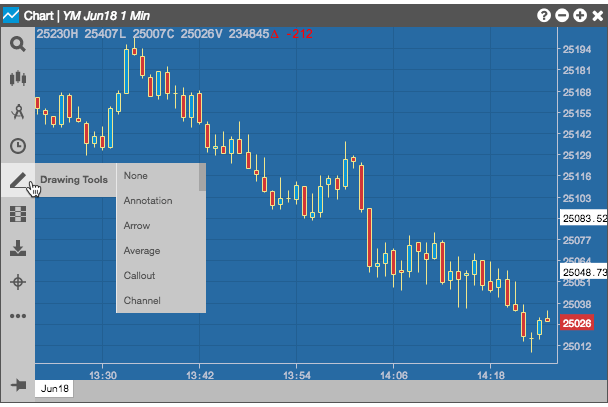
Note: Drawing tools are not available for Price Distribution charts.
Select None to deactivate all drawing tools.
You may add text-based notes anywhere on the chart by selecting Annotation from the Drawing Tools menu.
Once enabled, left-clicking the chart opens a text box that allows you to add and save the annotation.
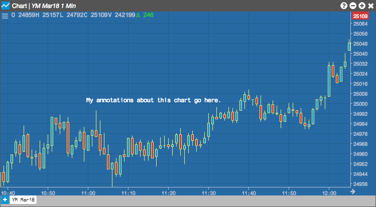
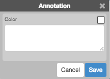
You can use the Arrow tool to highlight parts of a chart. The following example uses arrows to highlight some entry and exit points on the chart.
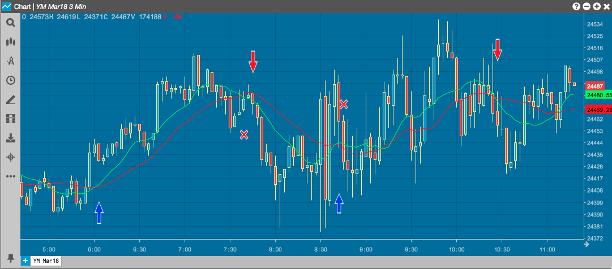
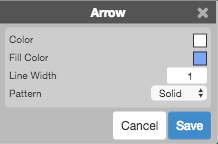
The Average tool draws a line representing the average price between two points in time on the chart. The following example draws a line at the average price between two lows.
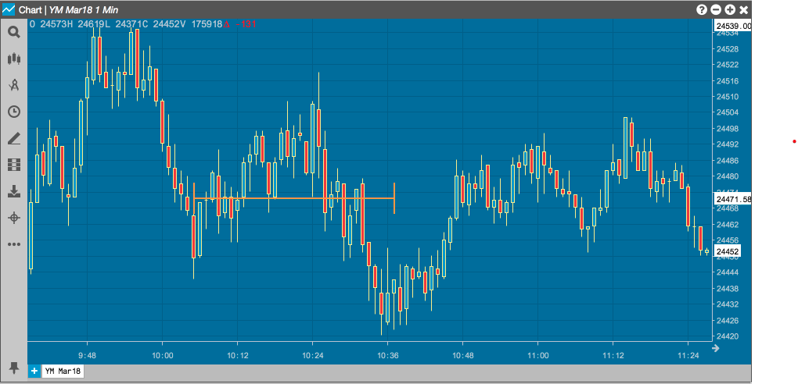
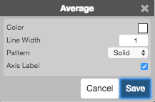
The Callout tool lets you draw attention to specific points in the chart and provide descriptive text.
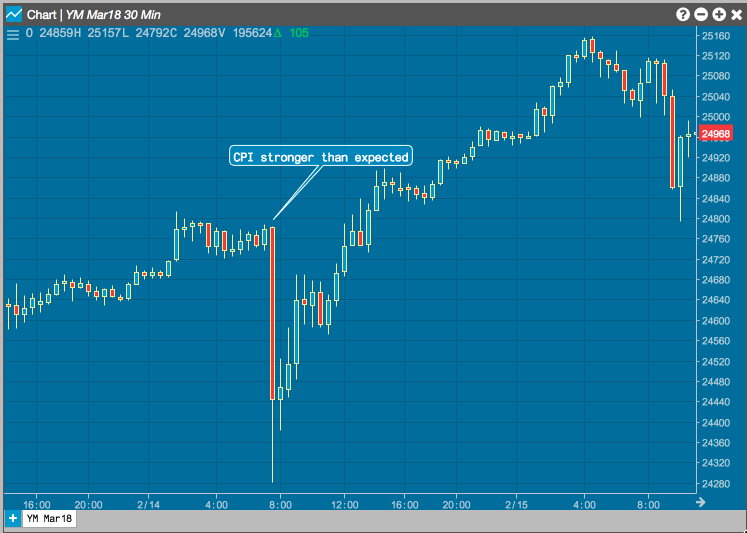
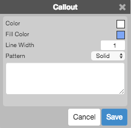
The Channel tool draws two boundary lines above and below the curve and shades the area between them to help you visualize the trend. Future activity that occurs outside the channel might signal a deviation from the trend. The following example uses the channel to help you see an opportunity if a trade crosses a trend boundary.
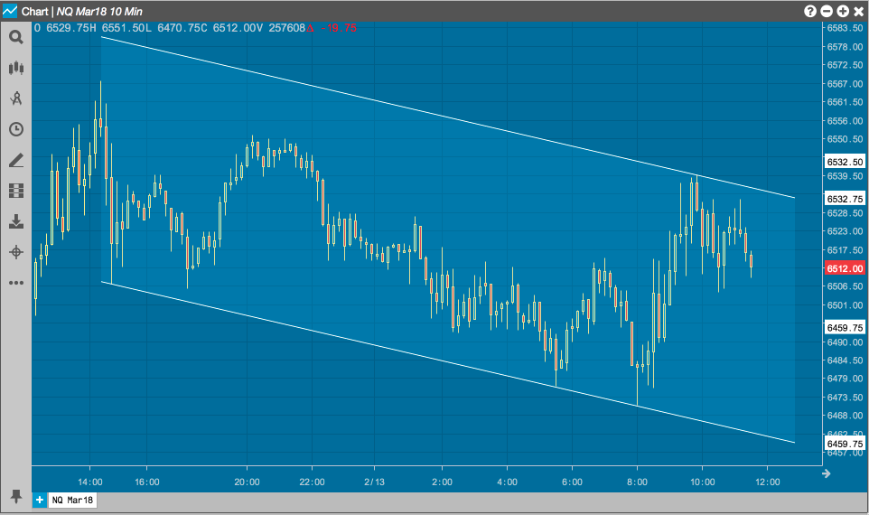
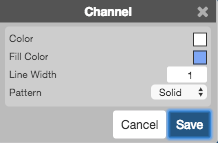
The Check tool places a checkmark on the graph, which you can resize and rotate.
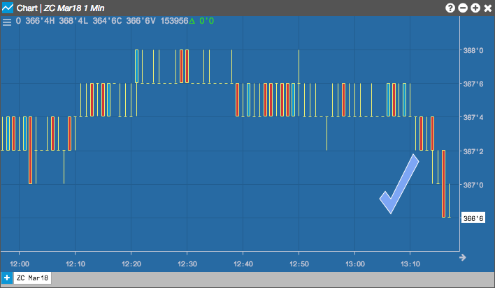
The Continuous tools allows you to draw multiple, connected line segements on the chart.
Selecting a new tool will automatically delete the final line from the chart.
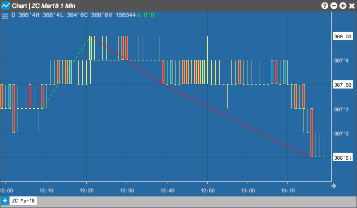
You can set the options for each segment of the continuous line

The Crossline tool draws perpendicular lines at a selected point in the chart, indentifying the intersection of a time (X-axis) and a price (Y-axis).
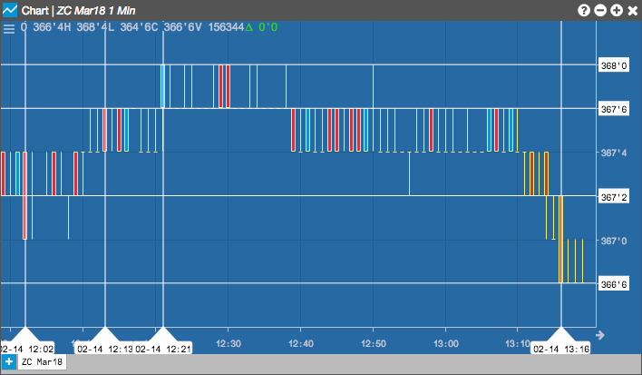
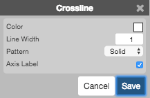
Left-click a midpoint to enable the Ellipse tool to draw an elliptical region centered around the selected point.
Move your cursor to change the size and direction of the region.
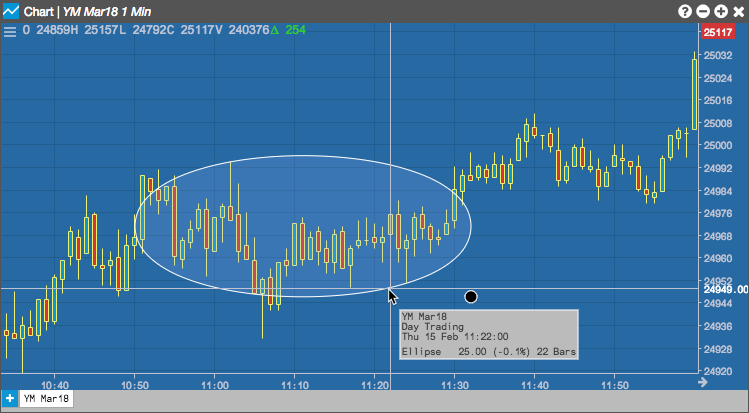
The Fibarc tool draws semi-circles centered arouund a trend line, based on the number of selected Fibonacci ratios (38.2%, 50%, 61.8% and 100%, by default). These arcs are typically used to identify potential areas of support and resistance. The area between adjacent arcs is shaded to give additional visual cues for the fan regions.
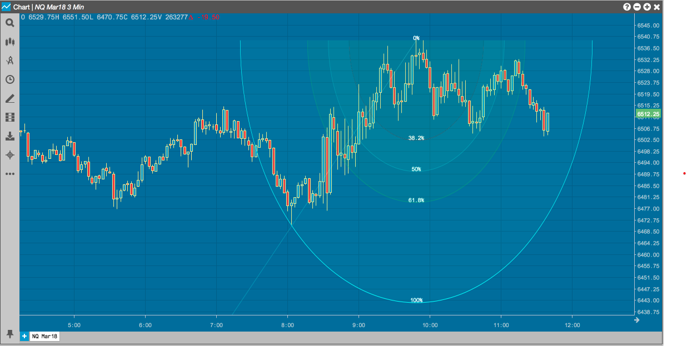
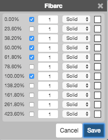
For each Fibonacci number:
The Fibfan tool draws a line betwen the low and high points on a curve and then fans out additional lines based on the number of selected Fibonacci ratios (38.2%, 50%, 61.8% and 100%, by default). The area between adjacent lines is shaded to give additional visual cues for the arc regions. Like the Fibarc tool, the Fibfan tool can help you indentify potential areas of support and resistance.

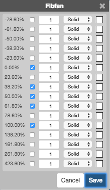
For each Fibonacci number:
The Fibonacci tool draws a line betwen the low and high points on a curve and then draws horiztonal lines extending from that line, based on the number of selected Fibonacci ratios (38.2%, 50%, 61.8% and 100%, by default). The area between adjacent lines is shaded to give additional visual cues for the regions. Like the Fibarc tool, the Fibfan tool can help you indentify potential areas of support and resistance.
Selecting Fibonacci allows you to draw a grid that divides the selected area into Fibonacci ratios. Left-click the desired midpoint on the chart and move your cursor to align the grid into the desired position.
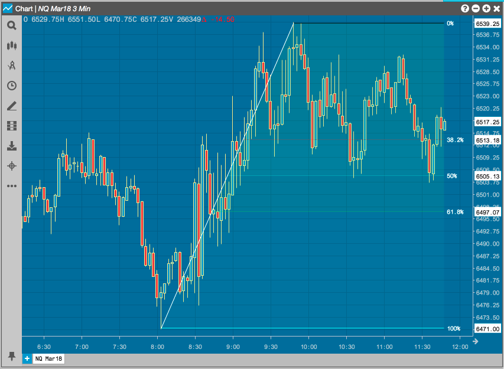

For each Fibonacci number:
A Fibonacci Projection can be used to identify where a market may retrace a previous move upward or downward and then continue in the direction of the initial move and go higher or lower. The projection levels are based on the same Fibonacci ratios and calculations used for drawing Fibonacci price levels.
The Fibprojection tool allows you to draw a grid that divides the selected area into projection levels. The projection is made up of three price points on the Chart. Left-click a point on the chart (first price point) and move your cursor to click on a price move up/down (second price point). Then move the cursor again to retrace a portion of the initial move and left-click the Chart to set the third price point.
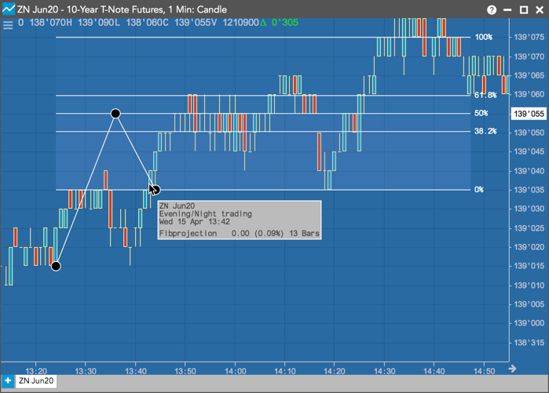
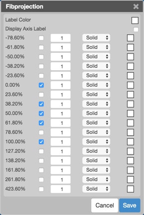
For each Fibonacci number:
The Fibtimezone tool draws a series of vertical lines from a chosen starting time on the chart. Beginning at that point, the tool draws each line at the time that corresponds to the next number in the Fibonnaci series. The area between adjacent lines is shaded to give additional visual cues for the regions.
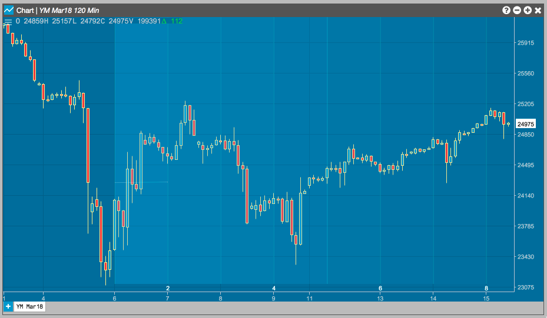
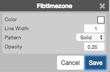
The Focusarrow tool places two arrows around a section of a graph. You can resize and rotate the arrows as desired.
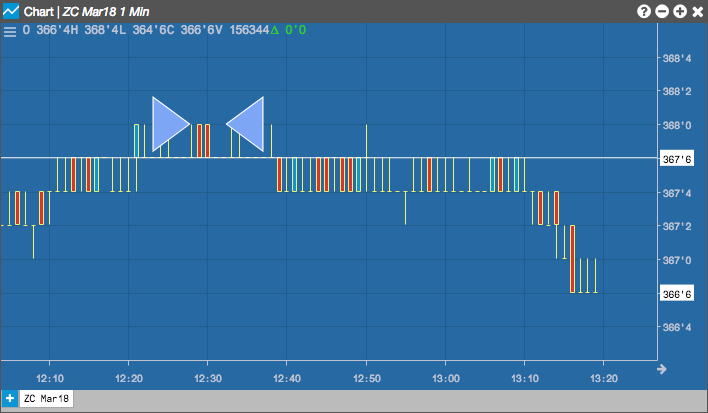
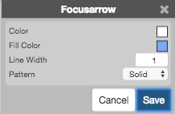
The Freeform tool allows you to draw irregular shapes on the chart.
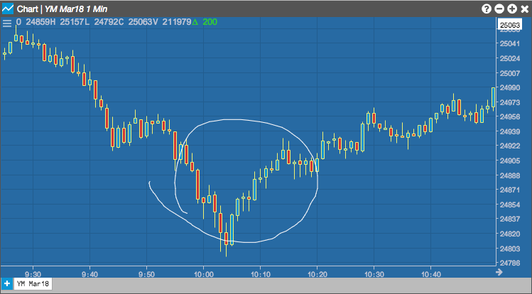
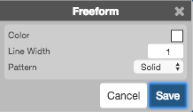
The Gannfan tool draws a series of nine diagonal trend lines from a significant high or low point on the chart. These lines are based on Gann angles. The middle trend of a Gannfan is drawn at a 45-degree angle form the point. Four additional lines are drawn at each Gann angle on both sides of that middle trend line. The areas are shaded to help you visualize potential areas of price support and resistance.
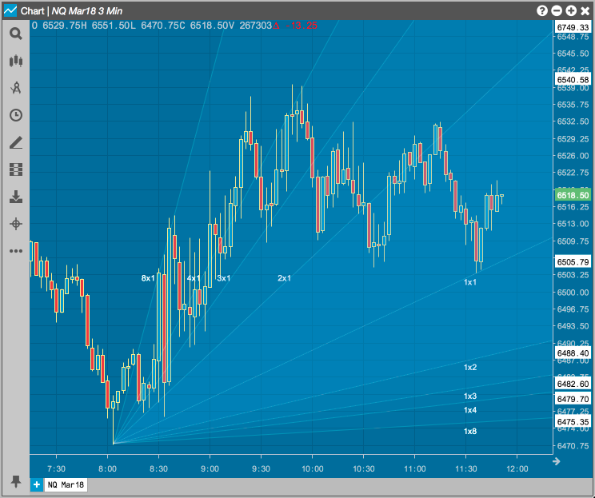
The Gartley tool draws a continous line through five points, where each point is determined by specific Fibonacci ratios. The series of regions bounded by each set of consecutive segments forms a pattern. The general shape of this pattern that help indicate when a correction is occurring. According to Gartley, an "M" shape indicates a bullish correction, while a "W" shape can indicate a bearis correction.
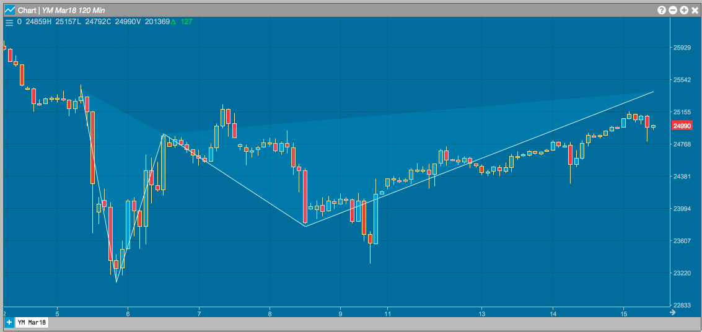
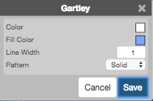
Left-click the desired time or price (X or Y) axis to add a vertical or horizontal line to a chart.
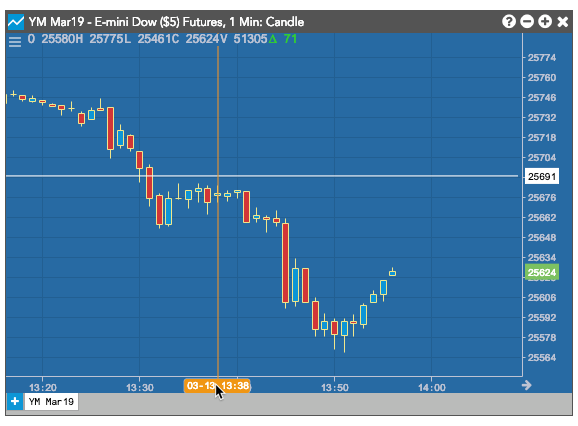
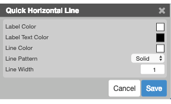
The Pitchfork tool (also called Andrew's Pitchfork) is used to help identify trending markets support and resistance levels. It starts at a key high or low point and then finds the two points identifying the next swing in the market. From these three points, the tool draws lines in the shape of a pitchfork to help identify areas for possible price support and resistance.
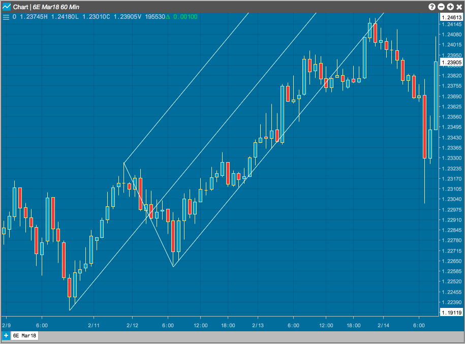
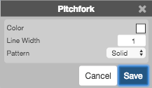
The Quadrant tool locates the high and low prices on the chart and draws horiztonal lines that that divide the range into four equal regions, or quadrants. These regions can help you identify different price levels within that range.
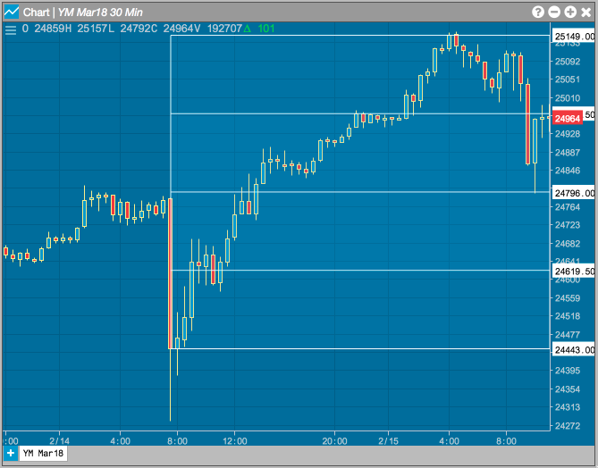
The Ray tool allows you to draw a continuous line that begins at the point you left-click on the chart.

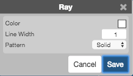
Use the Rectangle tool to shade a rectuangular region of the chart.
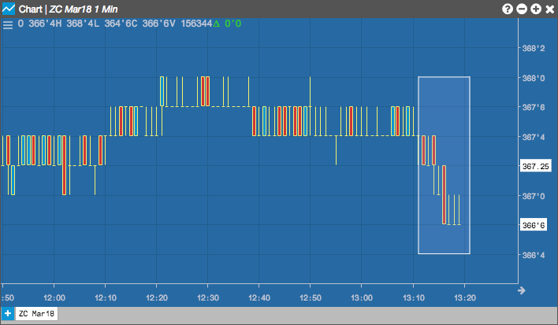
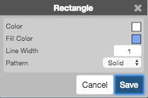
The Regression tool draws a line represening the slope between two prices over the selected time period.
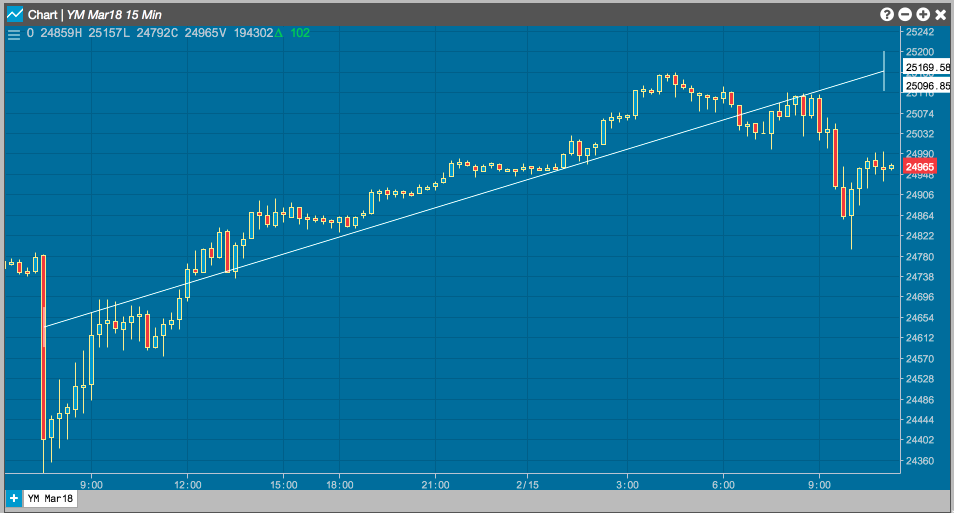
Use the Segment tool to draw a short line segment between two points on the chart. Unlike lines created by the Line or Ray tools, segments are limited by their two points and do not extend infinitely in either direction.
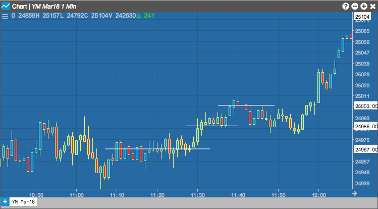
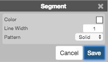
The Speedarc tool is used to measure the rate at which price trends are rising or falling. You choose two points on the graph to defined the starting point (price and time) and the ending point of the region. The the tool then draws arcs at one-third and two-thirds of the time-price range.
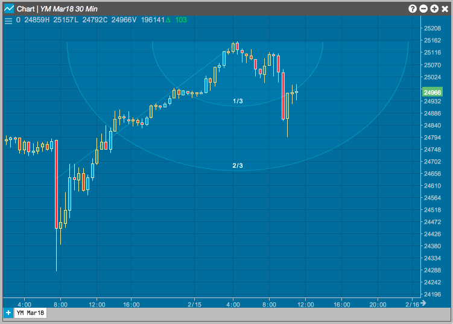
The Speedline tool is based on the Speed Resistance lines developed by Edson Gould. The first line is drawn between the low and high prices of the graph. The next two lines are drawn at one-third and two-third intervals. These lines can help you identify possible price support and resistance levels.
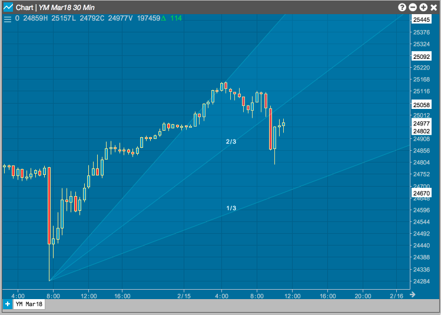
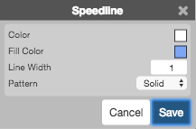
The Star tool places a star on the chart.
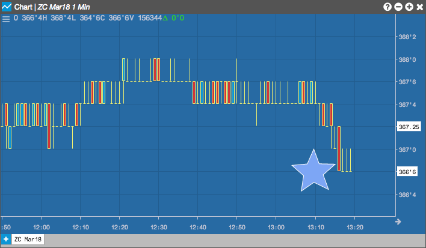
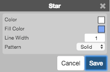
The Timecycle tool can be used to identify cycles in price movement over time. The tool draws vertical lines at regular time intervals, shading the area between each set of lines. The resuling regions can help you visualize patterns in sequence.
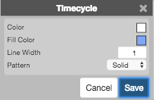
The Tirone tool can help identify possible areas of price support and resistance. From a selected time, the tool determines the high and low prices occurring after that point in time and caculates the difference between the high and low prices. It then draws a horizontal line at the top, bottom and median prices. It draws lines above and below the median line at intervals one-third and two-thirds of the price differnce. These regions can help you visualize potential price support and resistance areas.
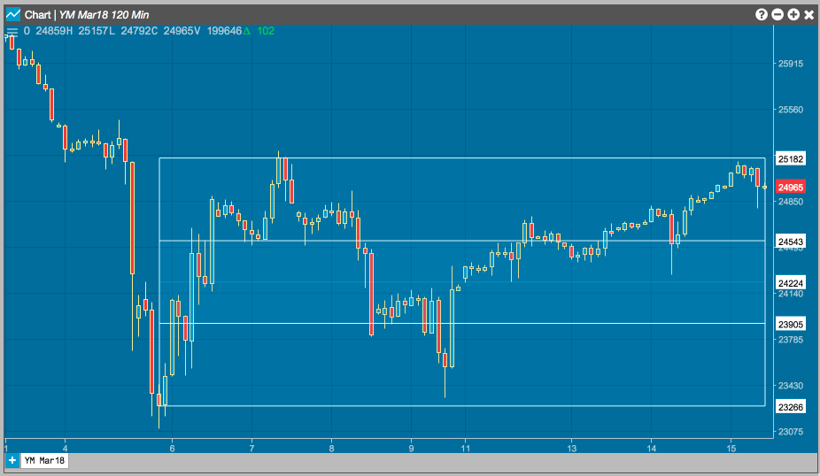
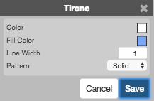
Trendlines can show support and resistance levels within a given time frame. The Trendline tool can be used to draw a line over pivot highs or under pivot lows to show the direction of price movements on a Chart. When a trendline is drawn, it shows the price change based on the number of ticks up or down, the percentage increase or decrease in price, and how many intervals (bars) are included in the trend.
The Vertical tool draws a straight, vertical line when you left-click the desired point on the chart.
The Xcross tool places an "X" on the chart.
Select Clear Drawings to delete all drawings from the chart.